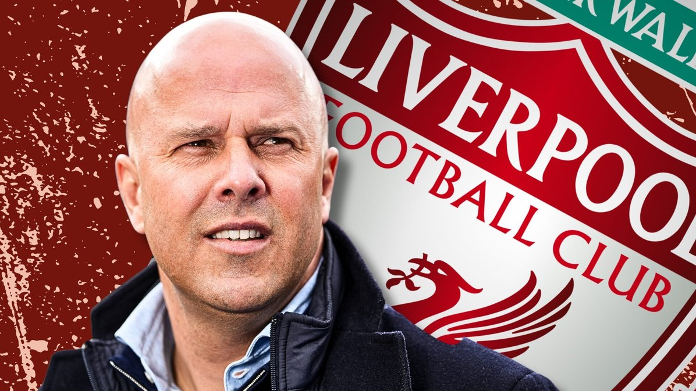

About Arne Slot
Arne Slot, born September 17, 1978, in Bergentheim, Netherlands, is a highly respected Dutch football manager known for his attacking philosophy and modern tactical approach.
Before becoming Liverpool's head coach in 2024, Slot made waves in the Eredivisie with impressive spells at AZ Alkmaar and Feyenoord. At Feyenoord, he revitalized the club, leading them to a league title in 2022–23 and to consistent European performances.
Career Highlights
- Player: Midfielder in the Dutch leagues, most notably with PEC Zwolle and NAC Breda.
- Manager at AZ Alkmaar: Known for his tactical sharpness and near title win before COVID-19 halted the 2019–20 season.
- Feyenoord (2021–2024): Won the Eredivisie in 2022–23, rebuilt squad culture, and reached the UEFA Conference League Final.
- Liverpool FC (2024–): Appointed as successor to Jürgen Klopp with the goal of continuing attacking football and youth development.
Vision for Liverpool FC
Arne Slot brings a fresh yet familiar attacking philosophy to Liverpool, focusing on:
- High pressing and positional play
- Fast transitional attacks
- Youth development and integrating academy players
- Tactical adaptability and squad rotation
Slot has expressed admiration for Liverpool’s traditions, the Anfield crowd, and Klopp's legacy, promising to build on that foundation with his own imprint.